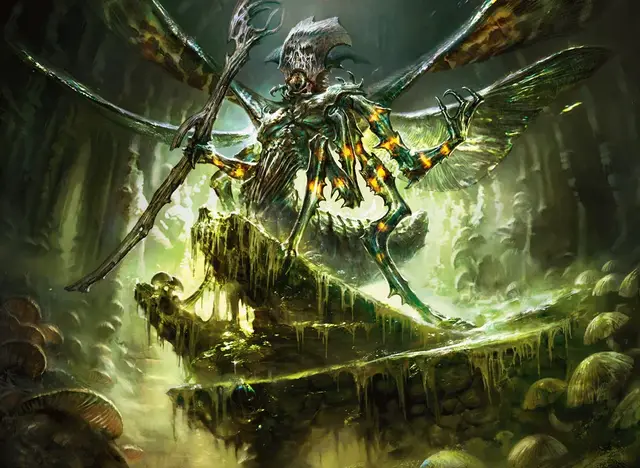

Жрец смерти краулов
Kraul Death Priest
Средний Гуманоид (Краул), нейтрально-злой

Класс Доспеха 18 (природный доспех)
Хиты 65 (10к8 + 20)
Скорость 30 футов, летая 40 футов, лазая 30 футов
| мод | спас | ||
|---|---|---|---|
| СИЛ | 16 | +3 | +3 |
| ЛОВ | 12 | +1 | +1 |
| ТЕЛ | 14 | +2 | +4 |
| мод | спас | ||
|---|---|---|---|
| ИНТ | 12 | +1 | +1 |
| МДР | 15 | +2 | +4 |
| ХАР | 10 | +0 | +0 |
Навыки Природа +3, Проницательность +4, Религия +3
Чувства тёмное зрение 60 футов, пассивное Восприятие 12
Языки Общий, Краул
Опасность 4 (1100 опыта)
Бонус мастерства +2
Особенности
Подпитка смертью. Когда хиты существа в пределах 30 футов от краула опускаются до 0, краул или другое существо по его выбору в пределах 30 футов от него получает 5 (1к10) временных хитов, при условии, что краул дееспособен.
Коллективный разум. Краул обладает иммунитетом к состояниям очарованный и испуганный, если находится на расстоянии до 30 футов от другого краула.
Врожденное колдовство. Базовой характеристикой заклинаний краула является Мудрость (Сл спасброска от заклинания 12, +4 к попаданию атаками заклинаниями). Он может накладывать следующие заклинания, без материальных компонентов:
• Неограниченно: леденящее прикосновение [chill touch], ядовитые брызги [poison spray]
• 3/день каждое: луч слабости [ray of enfeeblement], луч болезни [ray of sickness]
• 1/день каждое: восставший труп [animate dead], порча [bane], прикосновение вампира [vampiric touch]
Тактика стаи. Краул совершает атаку против существа с преимуществом если хотя бы один из союзников краула находится в пределах 5 футов от существа и союзник дееспособен.
Паучье лазание. Краул может карабкаться по сложным поверхностям, в том числе вверх ногами по потолку, без необходимости совершать проверки характеристик.
Действия
Мультиатака. Краул совершает одну атаку Боевым посохом и накладывает одно из своих заклинаний со временем накладывания "1 действие".
Боевой посох. . Рукопашная атака оружием: +5 к попаданию, досягаемость 5 фт., одна цель. Попадание: 6 (1к6 + 3) дробящего урона или 7 (1к8 + 3) дробящего урона, если используется двумя руками.
Описание
Жрецы смерти занимают самые высокие роли в обществе краулов. Они ведут гудящие песнопения обрядов краулов. Их непостижимые щелчки и жужжание могут вызвать калечащую магию некромантии, а присутствие смерти, кажется, укрепляет их. Они черпают силу из поражения своих врагов и направляют ее своим последователям, обеспечивая продолжение цикла.
Нынешний лидер краулов — жрец смерти по имени Мазирек.
Краулы
Краулы — влиятельная группа внутри Роя Голгари, долгое время довольствовавшаяся тем, что задерживалась на окраинах подземного города, но теперь все чаще их гудящие голоса звучат в подземном зале гильдии Голгари. Эти шестиногие насекомоподобные существа упрямы и мыслят буквально, плохо разбираются в метафорах или нюансах.